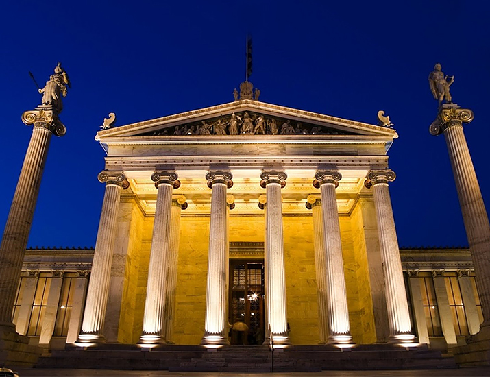
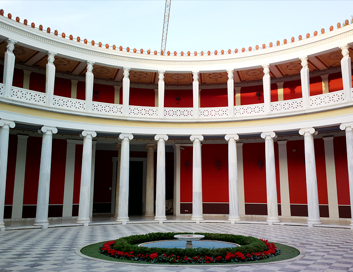
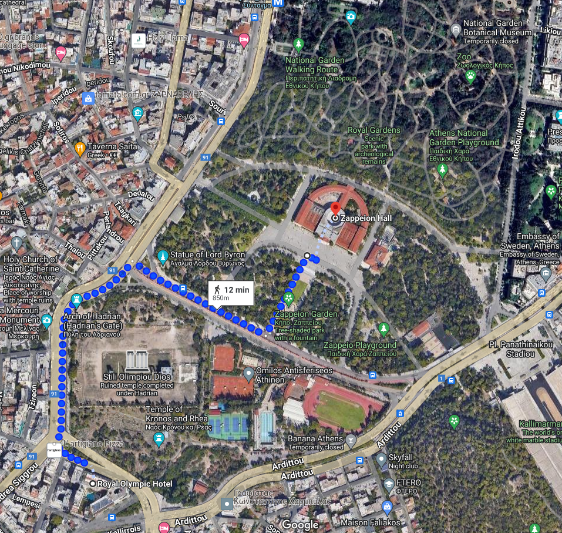

Zappeion Megaron is part of national heritage of Greek civilization, a symbol of architectural grandeur steeped in history and elegance nestled within the National Garden of Athens. Originally built to host the first modern Olympic Games in 1896, the Zappeion now stands as a testament to Greece's enduring legacy and commitment to fostering intellectual exchange. As you step into its elegant halls, you'll be enveloped in a timeless ambiance that inspires collaboration and innovation.
The historic building's grand halls and picturesque surroundings provide an ideal setting for prestigious ceremonies, gala dinners, and diplomatic gatherings. Additionally, it often serves as a hub for art installations and performances, enriching the cultural landscape of the city.